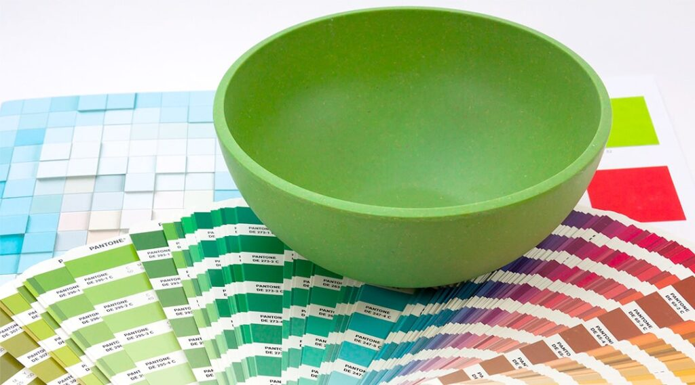

Resposta breve
Use Pantone como referência de cor e CMYK como método de reprodução, sem prometer equivalência exata. Quando a cor final for decisiva, avalie uma prova relevante no suporte escolhido.
Defina o que precisa de comparar
Use o ecrã para discutir o desenho e identifique o que é prioritário: referência de cor, contraste ou consistência entre superfícies. Uma prova de ecrã simula a reprodução, com limitações do monitor e das condições de observação. Não substitui a avaliação física quando esta for decisiva. ↗
1. Separe referência e método de reprodução
Uma referência Pantone identifica uma cor num sistema de referência; não determina, por si só, a técnica. Uma cor direta usa uma tinta preparada, enquanto CMYK combina ciano, magenta, amarelo e preto. As cores diretas podem estar fora da gama reproduzível por CMYK. ↗ Pergunte como a referência será interpretada no processo proposto.
2. Identifique suporte e configuração
A aparência final depende também do suporte e da tinta, como explica a Adobe para as cores diretas. ↗ Identifique cor de fundo, textura, pintura e revestimento. Se forem propostas bases brancas ou acabamentos adicionais, confirme se fazem parte da configuração avaliada. Não estenda a aprovação a outra superfície sem rever as condições alteradas.

3. Compare uma prova relevante
Forneça a referência completa disponível e combine uma prova no suporte escolhido quando a cor for decisiva. Compare as amostras em condições de luz consistentes e registe qual serve de referência. Defina o critério de aceitação para cada suporte; não presuma uma tolerância numérica ou igualdade entre técnicas.
4. Aprove cada variante necessária
Num conjunto com caneta e saco, confirme separadamente a aparência em cada superfície. A coerência visual do conjunto pode exigir ajustes próprios. Uma alteração de tinta, artigo ou acabamento pode justificar nova avaliação, mesmo que o ficheiro seja o mesmo. Guarde a identificação da prova e a versão aprovada.
Erros frequentes e prevenção
Tomar uma fotografia como amostra de cor
Use a fotografia para discutir composição; para avaliar a cor final, recorra à referência física e às condições de comparação acordadas.
Converter uma referência para CMYK e prometer igualdade
Peça avaliação da reprodução e aprove o resultado no suporte.
Lista de verificação antes de avançar
- Referência de cor e variante do artigo registadas.
- Técnica e configuração de tinta confirmadas.
- Prova e condições de comparação acordadas.
- Critério de aceitação definido para cada suporte.
Perguntas frequentes
Converter uma referência para CMYK garante igualdade?
Não. As gamas de reprodução diferem e a conversão depende das condições do documento e do processo. ↗
A mesma aprovação de cor serve para vários suportes?
Identifique quais foram avaliados. Se muda superfície, fundo, tinta ou acabamento, reveja a necessidade de uma nova prova.
Fontes, âmbito e revisão
Os passos e as listas são recomendações editoriais. As fontes sustentam os princípios identificados; condições de artigo, material, arte e processo precisam de confirmação específica.
-
About spot and process colors
Adobe · Consulta:Cores diretas, CMYK, gamas e influência do suporte; não promete equivalência entre processos.
-
Proofing colors
Adobe · Consulta:Prova de ecrã e condições de visualização; não estabelece comportamento físico de uma personalização.
Conteúdo revisto em .